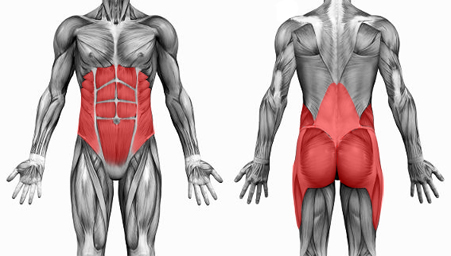
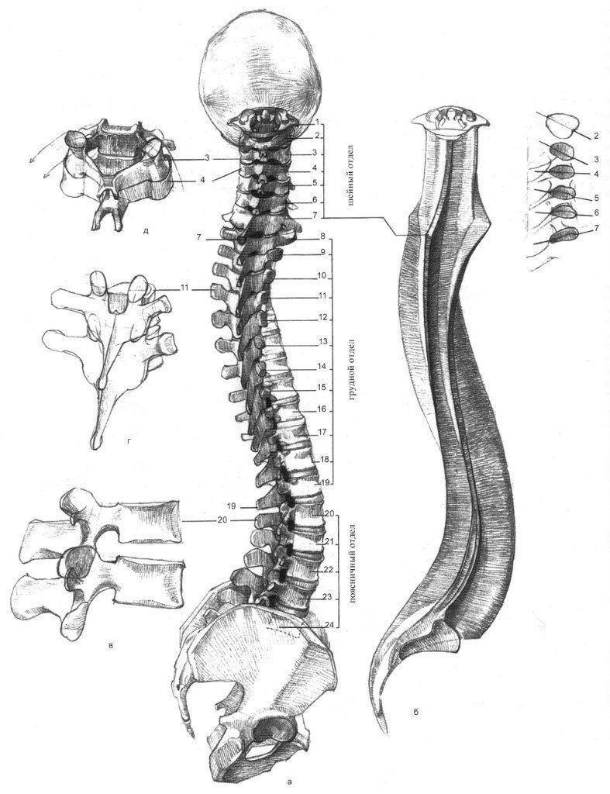
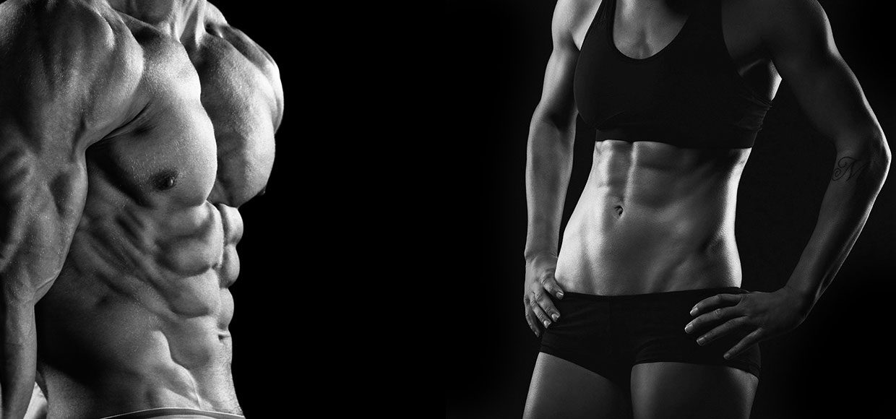

ПОЧЕМУ ЖЕНЩИНАМ ВАЖНО КАЧАТЬ ПРЕСС?
В организме каждого человека существует комплекс мышц кора, которые являются центральным звеном мышечной активности
 В мышцы кора входят:
- прямые, косые и поперечные мышцы живота;
- трапециевидные и подостные мышцы;
- широчайшие мышцы спины;
- малые и средние ягодичные мышцы;
- приводящие мышцы внутренней поверхности бедра и мышцы задней поверхности бедра.
Основные функции мышц кора в организме человека:
- обеспечение равновесия и гибкости тела;
- защита внутренних органов от перемещений и повреждений;
- фиксация и правильная работа позвоночника и суставов;
- формирование красивой осанки и правильной формы грудной клетки;
- здоровье кровеносной, выделительной, пищеварительной и мочеполовой систем (особенно для женщин);
- красивый внешний вид пресса и ягодиц.
Мышцы кора играют главную роль в стабилизации позвоночника. Благодаря работе мышц живота и их взаимодействию с диафрагмой, напряжение грудопоясничной фасции придает позвонкам устойчивость в спокойном состоянии. А большая и средняя ягодичные мышцы стабилизируют их при движении — ходьбе, беге, выполнении упражнений. Поясничная мышца сдерживает компрессию позвоночных дисков, то есть защищает их от повреждения при совершении на них большой нагрузки.
Мышцы кора связаны со всеми остальными мышцами организма. В момент совершения практически всех упражнений, источником физической силы являются именно глубинные мышцы кора. Поэтому нагрузка ложится именно на них, а не на целевые мышцы упражнения, если глубинные недостаточно развиты и крепки
То есть эффективность прокачивания бицепсов, трицепсов, наружных мышц пресса и прочих снижается. Также важна не только сила отдельных мышц, входящих в кор, но и силовой баланс между ними. Ведь нагрузка распределяется равномерно для предотвращения травм и повреждений.
Таким образом, мышцы кора непосредственно связаны с результативностью твоих занятий спортом. А также принимают непосредственное участие в твоей повседневной жизни.
Кроме того, работа мышц кора напрямую связана с работой нервной системы — нашим дыханием, настроением, ментальным здоровьем и стабильностью. Симпатические ганглии (те части нервной системы (НС), которые отвечают за работу симпатической НС) располагаются в грудном отделе позвоночника. Прокачивая и поддерживая их в натренированном состоянии, мы можем быстрее активировать работу этой части НС.
Существуют два положения мышц кора. В одном из них мышцы кора и грудная клетка находятся в сжатом положении, а во втором — в растянутом. От того, в каком положении чаще всего пребывает наш корпус, зависит расположение и работа диафрагмы, а также связь с психологическим состоянием и настроением.
Большое влияние оказывают привычки. Например, неправильная осанка при выполнении сидячей работы. Если ты часто сутулишься, мышцы спины со временем становятся растянутыми, а мышцы живота наоборот слишком напряженными. Мышцы, отвечающие за сгибание бедра гиперактивны и укорочены, а мышцы, отвечающие за разгибание, ослаблены.
Когда мышцы кора находятся в ослабленном положении, диафрагма оказывается придавленной. Таким образом наши легкие работают лишь на 2/3, а на самом деле и еще хуже, так как чем глубже располагаются клетки легкого, тем больше в них кровеносных сосудов и значит эффективнее происходит газообмен. То есть дышать нижней частью грудной клетки продуктивнее, чем верхней.
В таком случае организм постоянно испытывает недостаток кислорода, в связи с чем ухудшается работа внутренних органов, кровеносной, пищеварительной, выделительной и нервной систем, нарушается работа головного мозга, замедляются реакции, мы медленнее думаем и нам сложнее принимать решения, полноценно отдыхать и испытывать эмпатию. Кроме того, происходит закисление (отравление) организма не до конца выведенным углекислым газом, которое приводит к вялости, усталости, снижению концентрации и ухудшению общего состояния.
В то время как при постоянной работе над мышцами кора (активных тренировках и присутствию регулярной растяжки), тело чаще занимает положение, которое позволяет дышать полной грудью, задействуя и самую важную нижнюю треть легких. Кстати, именно в этом положении мы находимся, когда плачем, так происходит более глубокое дыхание, организм заботится о нашем психологическом состоянии и провоцирует проживание отрицательных эмоций с целью облегчения состояния.
Итоги
Очень важно уделять внимание проработке мышц кора на своих тренировках. Это необходимо для обеспечения красивого и гармоничного вида тела, эффективных и результативных достижений в тренировках, а также для сохранения здорового положения позвоночника, суставов, других мышц, положения внутренних органов и нормальной работы различных систем организма.